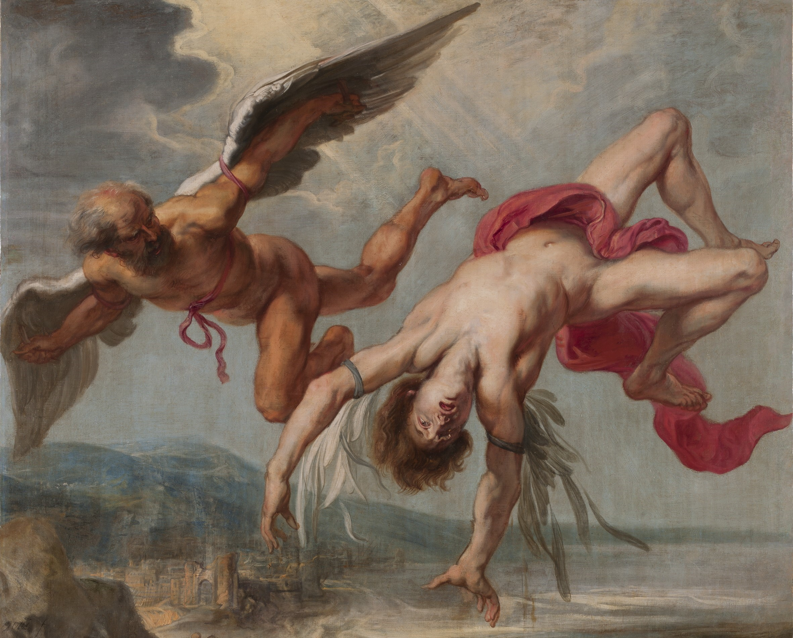

|
|
|||||||||
|---|---|---|---|---|---|---|---|---|---|
| Index | Introdução | Primórdio | Voo Motorizado | Guerra | Motor a Jato | Jumbo Jet | Tabela | Galeria | Sobre Mim |
O Sonho de Voar: Uma Introdução à História da AviaçãoDa Lenda de Ícaro à Conquista do Espaço |
|||||||||
|  |
A história da aviação é, fundamentalmente, um relato da curiosidade e da determinação humanas. Durante milênios, voar foi apenas um sonho, uma conquista destinada às divindades e aos mitos. Contudo, a resolução firme de cientistas, engenheiros e inventores tornou esse anseio ancestral em realidade. O domínio do ar não foi apenas uma conquista técnica; foi uma transformação paradigmática que alterou nossa compreensão de tempo, distância e até mesmo das habilidades humanas. A lenda grega de Ícaro é a metáfora perfeita para o início da aviação. Aprisionado, seu pai, Dédalo, construiu asas feitas de penas e cera. A instrução era clara: não voar muito baixo, para que a umidade não pesasse nas asas, nem muito alto, para que o calor do sol não derretesse a cera. No entanto, Ícaro foi dominado pela ambição e voou alto demais. A cera derreteu, e ele caiu no mar. A tragédia de Ícaro ecoa o dilema inicial da aviação: a tecnologia pode nos levar aos céus, mas o sucesso depende da ciência, do rigor e do respeito pelos limites impostos pela natureza. |
|
|
A lenda grega de Ícaro é a metáfora perfeita para o início da aviação. Aprisionado, seu pai, Dédalo, construiu asas feitas de penas e cera. A instrução era clara: não voar muito baixo, para que a umidade não pesasse nas asas, nem muito alto, para que o calor do sol não derretesse a cera. No entanto, Ícaro foi dominado pela ambição e voou alto demais. A cera derreteu, e ele caiu no mar. A tragédia de Ícaro ecoa o dilema inicial da aviação: a tecnologia pode nos levar aos céus, mas o sucesso depende da ciência, do rigor e do respeito pelos limites impostos pela natureza. Cada fase representa um salto tecnológico fundamental, desde a descoberta da sustentação com planadores simples até o domínio do voo a jato e a busca pela máxima eficiência moderna. Convidamos você a explorar essa linha do tempo, navegando pelas seções para testemunhar a evolução que moldou o mundo como o conhecemos hoje. |
||